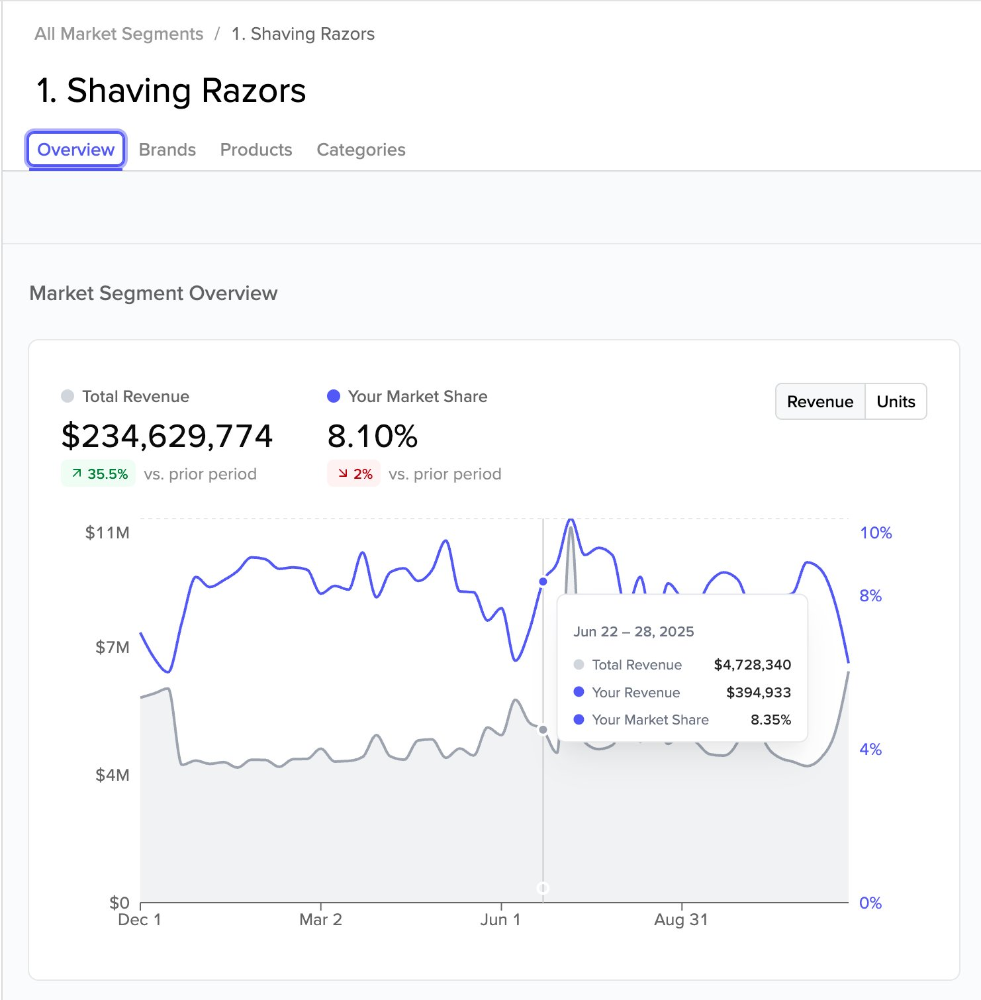
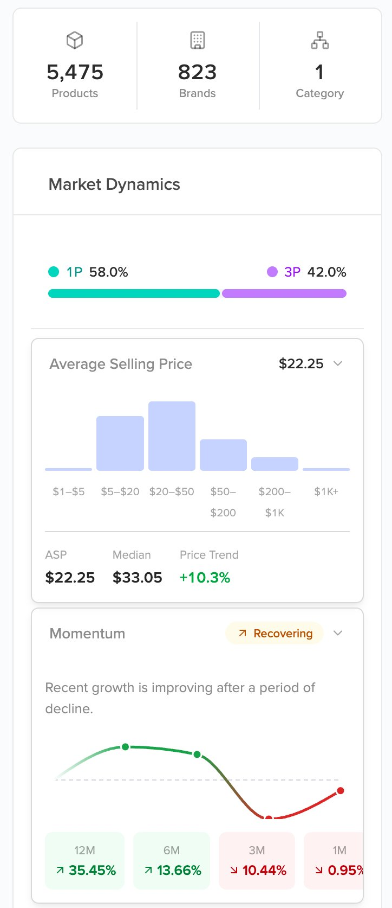
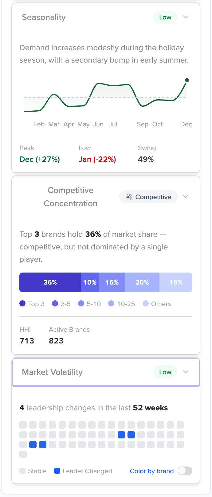
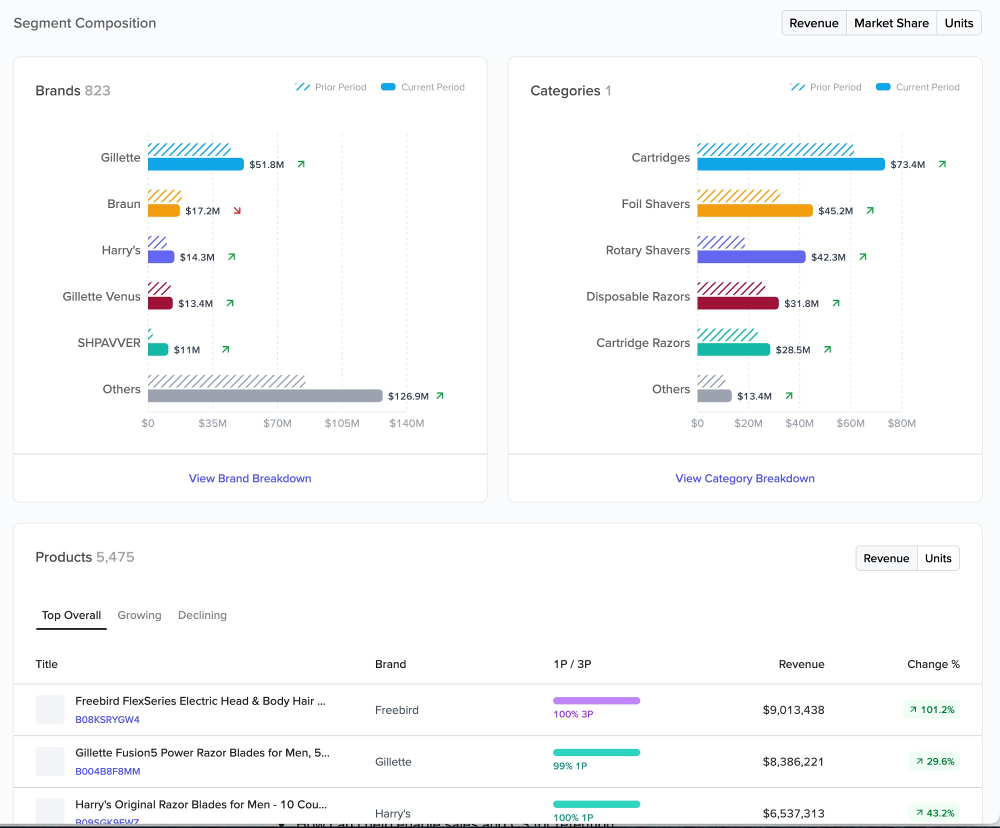
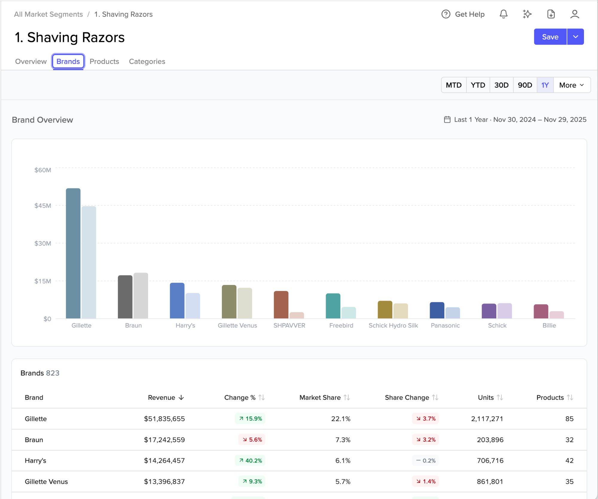
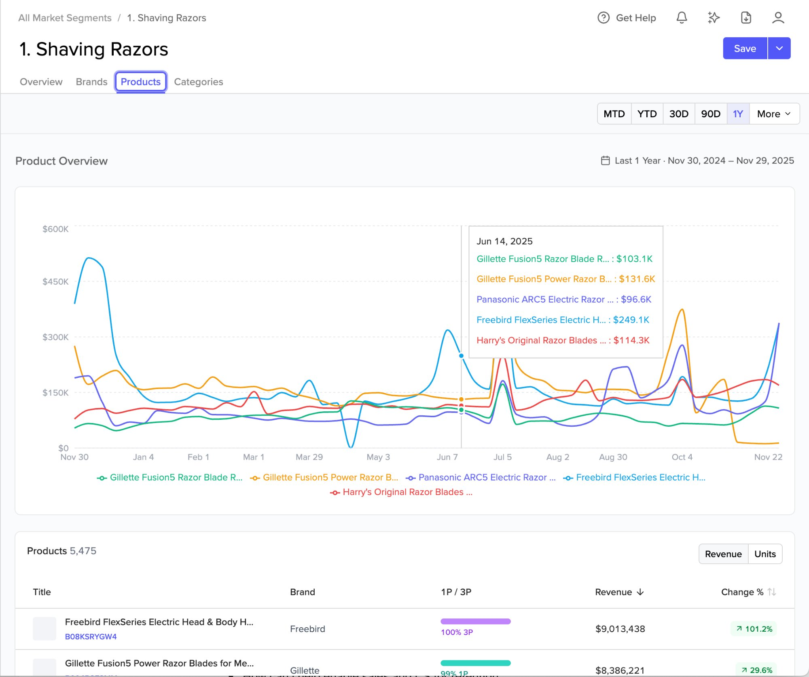
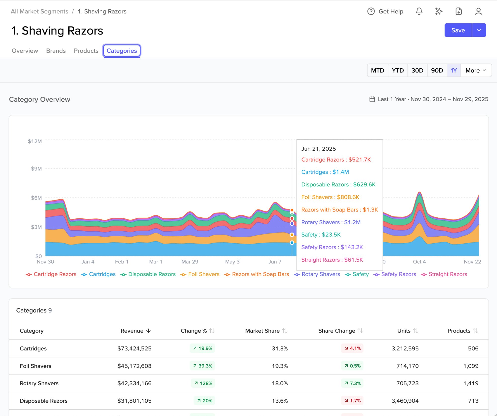

Know Your Competition › Topic 1 of 3
Know Your Competition
Topic 1 of 3
Set up your competitive market view
Market Analysis narrows the Amazon catalog down to the products you actually compete against. Apply filters to define that slice, and your competitive data — revenue share, unit share, ASP, market dynamics, and more — updates alongside it. This guide walks you through defining your market, choosing the right filters, validating your results, and saving a view to return to for consistent benchmarking. The Quick Reference Card for this topic is a one-page summary of this process — this In-Depth Guide goes deeper on the reasoning behind each step.
📖 This is the In-Depth Guide for Topic 1. It covers the same process as the Quick Reference Card with expanded explanation, filter details, and reference material. If you want a fast visual summary of the steps, see the Quick Reference Card.
Before you dig in
- Marketplace-specific. You can't mix marketplaces in a single view — set up separate views for each market you want to analyze.
- Access is based on your contract. Your subscription defines which Amazon Level 2 categories you can analyze. Level 2 categories sit one level below a top-level Amazon parent — for example, Beauty & Personal Care is the parent; Shaving & Hair Removal Products is an L2 category. Products outside your contracted L2 categories won't appear in your results regardless of filter settings. There's no cap on the number of products within your accessible categories.
- Weekly data refresh. The full two-year rolling history updates every Saturday automatically.
- Dynamic by default. Saving stores your filter configuration — not a product snapshot. Each time you open a view, it reflects whatever products currently match your filters against the latest data.
What you'll be able to do
By the end of this topic, you'll have one or more saved Market Analysis filter sets showing the products you compete against, organized in a way that matches how you think about your market. These become the foundation for the benchmarking and disruption analysis in Topics 2 and 3.
Step 1 — Define who you're competing against
The most important decision isn't which filter to use first — it's getting clear on who you're competing against before you open Market Analysis. A market defined too broadly or too narrowly produces data you can't act on.
Think like the buyer. When someone is looking to buy your product, who else are they considering? That consideration set has consistent signals: keywords that drive traffic to your listings and competitors', one or more subcategories where most competition lives, and a price range where real tradeoffs happen. A buyer looking for a women's disposable razor is not cross-shopping men's refillable razors — combining both into one view makes both harder to analyze.
There's no single right filter combination. Some niches are cleanly defined by a subcategory node. Others are defined by a shared keyword that cuts across multiple categories. Others need both. If the products that come back look right to you — meaning a buyer considering your product would realistically consider those products too — then your segment is right.
Questions to work through before you start
What do the products in your market have in common?
Think shared attributes — product type, use case, form factor. What makes them similar enough that a buyer sees them as alternatives? Does that translate to a shared keyword, subcategory, price range, or some combination?
When someone buys your product, who else were they considering?
Which competitors show up in the same search results? What keywords connect your listings and theirs? Would a buyer comparing your product ever choose a competitor's instead?
Are your competitors in one subcategory, or spread across several?
If competition clusters in one subcategory node, a category filter may be enough to anchor results. If competitors categorize differently, title keywords are typically more reliable as a starting point.
How many filter sets do you need?
A single well-built filter set gives you brand breakdowns, subcategory revenue splits, top products, and market dynamics all in one place — that's enough for many sellers. Create additional narrower filter sets when you need to see a specific niche independently. How many you need depends on your product line and the questions you want to answer.
ℹ️
Looking beyond your direct competitors
Market Analysis isn't only for head-to-head competitive tracking. You can monitor an adjacent category you're considering, a price tier above or below yours, or a format you don't currently sell. The filter logic is the same; the intent is different.
Step 2 — Understand your filter options
Every filter in Market Analysis narrows or expands the product list your segment is built from. Start with Product Title or Category to anchor your initial product list, then layer additional filters to refine it. Results update in real time as you apply each one — no build step, no delay.
| Filter | What it does and when to use it |
|---|
| MarketplaceRequired |
Set this first. All product data, revenue, and share figures reflect the marketplace you select. You can't mix marketplaces in a single view. |
| CategoriesMost used |
Filter by Amazon subcategory via tree navigation. Powerful as an exclusion tool — the results panel shows all categories in your product list with counts, so you can identify and remove off-target categories in bulk without writing individual keyword exclusion rules. |
| Brands |
Better as a refinement tool than a starting point — identify the right products first, then include or exclude specific brands if needed. Also useful for consolidating competitors with inconsistent brand name spellings into a single view. |
| Product TitleMost used |
Filter by keywords in product titles. Supports Contains / Does Not Contain operators with Any of / All of logic, plus multi-rule and multi-group combinations for more precise filtering. Best starting point when competition is defined by a shared keyword rather than a subcategory. See Product Title — Advanced Filter Logic below for full documentation. |
| Revenue |
A secondary signal for activity. Revenue reflects a recent window, so a strong seller that went out of stock last month may appear inactive. Use other filters to define your view; treat revenue as an analysis metric once filters are set. |
| Price |
Filters by the median Buy Box price of daily values over your selected window (30D, 90D, 180D, 1Y, or 2Y). All daily prices within the window are collected and the median of those values is used — not an average, and not a point-in-time price. Longer windows include more daily data points, making the median more stable and less sensitive to short-term price moves.
Example: A product is priced at $24.99 for 27 days of a 30-day window, then runs a promotion at $18.99 for 3 days. The median of all 30 daily prices is $24.99 — because the promotional days are a small minority of the dataset. A filter set to $20–$30 includes this product. The promotional price alone wouldn't move it out of range because the median reflects the full distribution of daily prices, not just recent ones.
Use when your market is defined by a price band, or to remove large bundle packs that would skew averages. Note that the time window labels may be updated from days-based in a future release. |
| Star Rating |
Filter by average star rating using a sliding scale from 0 to 5. Setting a minimum above 0 will exclude unrated products. Use to focus on established, reviewed products or to filter out low-quality listings that may skew market data. |
| Rating CountSuggested |
Filter by the current total number of ratings on a listing. Set a minimum, maximum, or both. Setting a minimum of 1 removes products that have never been rated — strongly correlated with products that have never meaningfully sold. Can cut 30–40% of a broad result set immediately and keeps your averages and share figures from being diluted by inactive listings. |
| Excluded Products |
Remove specific products from your segment without adjusting other filters. Paste or type ASINs separated by commas, spaces, or new lines. Use when filter logic alone can't cleanly exclude a product that keeps appearing in your results. |
💡
Which filter to start with
Start with Categories when competition clusters in a specific subcategory — more reliable for dimensions Amazon has already categorized (gender, product type, major format).
Start with Product Title when competition is defined by a shared keyword that doesn't map cleanly to a subcategory. Pair with a category filter to remove noise in bulk.
Add Rating Count ≥1 early — removes inactive listings that have never meaningfully sold and keeps your product count, averages, and share figures meaningful.
Product Title — Advanced Filter Logic
The Product Title filter supports multi-layered logic through rules and groups, giving you precise control over which products are included or excluded based on keyword combinations. This includes Contains / Does Not Contain operators, Any of / All of logic, the ability to add multiple rules within a group, and the ability to chain groups together with AND / OR logic at the group level.
Part 1 — Create your first filter set
Step 3 — Start building your segment
This is where you start interacting with Cobalt. Open Market Analysis, apply your first filter, and review what comes back. Results update in real time — no build step, no processing delay. Start broad, then tighten.
▶
Market Analysis: Creating a Segment
5:54 · Video walkthrough
Open Market Analysis
Left nav → Market Trends → Market Analysis. Click Start Market Analysis — the filter panel opens.
Start with Marketplace
Every metric is scoped to the country you select and data can't be mixed across markets. Set this first before applying any other filters. If you sell in multiple markets, you'll set up separate segments for each.
Then add your segment filters
Add Category or Product Title filters
Category: expand the tree, check relevant subcategory nodes, uncheck anything that doesn't belong. Click Apply — results update in real time. Product Title: set operator to contains any of, type each keyword, press Enter to confirm as a chip, then Apply. Add additional filters — Rating Count, Price, Star Rating — to refine further.
Start broad. Your initial results will be large — that's expected. The next step cleans it up. Not sure which subcategory to start with? Check the Best Sellers Rank section on any competitor's Amazon listing — it shows their exact subcategory path.

Product Title — keywords as chips

Category — tree navigation
Review, then adjust or add more filters
Start with a quick gut check on the Overview tab — the Segment Composition section shows your top 5 brands, top 5 categories, and top 10 products by revenue or units. This is the fastest way to confirm you have the right group of products in your view. Then dive deeper on the Products, Brands, and Categories tabs for more detailed views at each level. Use any filter — keywords, category tree, price range, or others — to add or remove products until the results reflect your real market.
Ask yourself: Are the competitors I expect showing up? Is anything clearly off? Those two questions tell you when to stop.

Overview tab — Segment Composition gut check

Products, Brands, Categories tabs — deeper detail
Explore the data — then save to come back or build on it
Dig into the Overview, Brands, Products, and Categories tabs across MTD / YTD / 30D / 90D / 1Y date ranges. When you find a view worth returning to, give it a clear name — if you plan to build multiple related segments, number them ("1. Shaving Razors," "2. Disposable Shaving Razors") so they sort predictably in your library. Click Save. To create a related but narrower view, open your saved segment, adjust the filters, rename it, and click Save as New — this preserves the original and creates a new one alongside it.
Save overwrites. Save as New preserves the original. Always use Save as New when building a new view from an existing one.

Name and save — stores your filter config

Save as New — creates a new view, keeps the original
Part 2 — Explore what your segment shows you
Step 4 — Validate what your segment shows you
Before creating additional filter sets, use your first segment to confirm you've captured the right market. The four tabs — Overview, Brands, Products, Categories — each give you a different angle on what's in your segment. You're not analyzing anything deeply yet. You're asking one question: does this look like my market?
If the answer is no, go back and adjust your filters. If something looks off — unexpected brands, a subcategory that doesn't belong, a product count that seems too high or too low — that's your signal. The same tabs you're using here for validation are the ones you'll use in Topic 2 to benchmark your performance and analyze your competitive position. We'll go deep on what the numbers mean there. For now, use them as a gut check.
ℹ️
Where to find your market share
Your brand's market share within a segment is in one specific place: the chart at the top of the Overview tab. The blue line shows your share over time; the figure at the top shows your overall share for the selected date range. Hover over any point to see your revenue and share for that week. The "Market Share" values throughout Brands and Categories tabs reflect that brand's or subcategory's portion of the total segment — not your brand's share within it.
Overview tab
Start here. The Segment Composition section shows your top brands, top subcategories, and top products at a glance — the fastest gut check on whether your segment contains the right group of products. If the brands and subcategories you expect aren't here, or something clearly off-market is dominating the list, go back and refine your filters before moving on.

Market Segment Overview — your brand's share (blue) vs. total segment revenue (gray) by week. Hover any point for weekly detail.
Market Dynamics — 1P/3P split, ASP & Momentum

1P vs. 3P revenue split. Average Selling Price distribution by price band with ASP, median, and price trend. Momentum signal with directional growth label.
Market Dynamics — Seasonality, Concentration & Volatility

Seasonality — peak, low, and swing %. Competitive Concentration — top brand share breakdown and HHI score. Market Volatility — leadership changes over 52 weeks.

Segment Composition — top brands and top subcategories by revenue, side by side with prior period comparison. Switch between Revenue, Market Share, and Units.
Brands tab
Scan the brand list to confirm your key competitors are present and sized roughly as you'd expect. If a major competitor is missing or a brand you don't recognize is outsized, that's a signal your filters may need adjustment. You'll come back here in Topic 2 to analyze competitive trajectories in detail.
Brands tab

Revenue, change %, and share-of-segment for every brand. Prior period comparison. Sortable by revenue, share, units, or product count.
Products tab
Check that the top products look like real competitors — products a buyer would consider alongside yours. An unexpectedly high product count, or a top product that clearly doesn't belong, usually means a keyword or category filter needs tightening.
Products tab

Top products by revenue with change % and 1P/3P split. Revenue trend chart. Growing and Declining product views.
Categories tab
This is the most useful tab during segment setup. It shows every Amazon subcategory represented in your current results with product counts — making it easy to spot off-target subcategories and remove them in bulk via the Category filter tree. If you see subcategories that don't belong, this is where you catch and fix them.
Categories tab

Revenue, change %, and share-of-segment by subcategory. Stacked time-series shows how subcategory mix shifts over time.
ℹ️
Need a full breakdown of every metric?
A dedicated Market Analysis Data Reference article covering every panel, metric, and chart across all four tabs — including Market Dynamics, Seasonality, Competitive Concentration, and Market Volatility — is in development. It will be linked here when available and will serve as the technical reference for this data throughout all KYC topics.
ℹ️
Your analysis is only as good as your filters
Every data point — revenue share, brand ranking, subcategory splits — is derived from the products in your filter set. A view that's too broad gives you averages that don't reflect your real competitive situation. Take the time to get the filters right.
Part 3 — Create additional filter sets when you need them
Step 5 — Build narrower filter sets using Save as New
Once you've built and validated your first segment, you can create additional, related segments by narrowing the filters and saving as new — no need to start from scratch. Think about the levels at which you want to track your performance: a broad view of your whole category, a focused view of a specific format, a niche view of a particular subcategory. Each level you define becomes its own lens on the data with its own market share view.
Open an existing segment and narrow the filters
Open your saved segment. Adjust filters to focus on a specific niche — narrow the category tree to a tighter subcategory, add keyword rules, or both. Apply after each change and check the product count and Segment Composition to confirm you've got the right products. Try different combinations: category-only filtering sometimes gives cleaner niche results than combining title and category. In the razor example, narrowing from all shaving razors to disposable subcategories only drops the pool from ~5,500 to ~1,400 products and reveals a very different market share picture.
Rename and Save as New — then repeat
Update the name to reflect the new scope. Click Save as New — not Save — to create a new segment while keeping the original intact. Then open the newest segment and repeat for each additional level you need.
Save overwrites. Save as New preserves the original. Always use Save as New when building from an existing segment.
Save as New — creates a new segment, keeps the original
All segments in your library
Example — Four segments built level by level
A razor brand built these four filter sets using Save as New. Because each segment contains a different set of products, each one gives a different view of their market share and competitive performance — broad category share at the top, niche share at the bottom. Building multiple related segments lets you see your position at whatever level of the market is most relevant for a given decision: total category, format, or gender sub-niche.
1
Shaving Razors
All razor formats and genders. Broadest market view.
~5,500 products
8.1% share
↓ Narrow to disposable subcategories → Save as New
2
Disposable Shaving Razors
Disposable subcategories only — strips out electric and cartridge formats.
~1,400 products
30.7% share
↓ Narrow to women's subcategory only → Save as New
3
Women's Disposable Razors
Women's subcategory only. Much higher share in a smaller pool.
~543 products
48.0% share
↓ Repeat for men's subcategory from segment 2
4
Men's Disposable Razors
Men's subcategory only. Reveals a different competitive picture.
~869 products
9.1% share
Frequently asked questions
How do I know if my segment contains the right products?
Start on the Overview tab and check the Segment Composition section — it shows your top 5 brands, top 5 subcategories, and top 10 products. Ask yourself: are the competitors I expect showing up? Is anything clearly off? Those two questions tell you when to stop refining. If the products look like what a buyer would consider alongside yours, the segment is right.
Should I start with Categories or Product Title?
Start with Categories when competition clusters in a specific subcategory — it's more reliable for dimensions Amazon has already defined (gender, product type, major format). Start with Product Title when competition is defined by a shared keyword that doesn't map cleanly to a subcategory. Not sure which subcategory to use? Check the Best Sellers Rank section on any competitor's Amazon listing — it shows their exact subcategory path.
There's no single right filter combination.
Some niches are cleanly defined by a subcategory node. Others are defined by a shared keyword that cuts across categories. Others need both. If the products in your results are ones a buyer would realistically consider alongside yours, your segment is right. Don't overthink the filter logic — the data will tell you if something is off.
Why should I add Rating Count ≥1 early?
Adding a Rating Count minimum of 1 removes products that have never been rated — strongly correlated with products that have never meaningfully sold. This can cut 30–40% of a broad result set immediately and prevents inactive listings from diluting your product counts, share figures, and market averages.
How does the price filter work exactly?
The price filter uses the median Buy Box price of daily values over your selected window (30D, 90D, 180D, 1Y, or 2Y). All daily prices within the window are collected and the median of those values is used — not an average, and not a point-in-time snapshot. This means a short promotion has limited impact on the median unless it runs for a significant portion of the window. Longer windows include more daily data points, making the result more stable.
What does saving a segment actually store?
Saving stores your filter configuration — not a product list. Every time you open a saved segment, it reflects products currently matching your filters against the latest weekly data. New products that match your filters appear automatically on the next Saturday refresh. Products that stop matching — discontinued listings, ASINs that migrate subcategories — drop out automatically.
Where do I find my market share?
Your brand's market share is in one specific place: the chart at the top of the Overview tab. The blue line shows your share over time; the figure at the top shows your overall share for the selected date range. Hover any point to see your revenue and share for that week. The "Market Share" figures on the Brands and Categories tabs reflect that brand's or subcategory's portion of the total segment — not yours.
Why does my share look so different across segments?
Each saved filter set measures share within a different pool of products. An 8% share of the broad shaving razor market and a 48% share of the women's disposable razor market can both be true at the same time — they're measuring different competitive sets. Build segments at the levels that matter for your decisions.
Are revenue figures exact?
No. Cobalt estimates unit sales from Amazon data, then calculates revenue as estimated units × price. Revenue figures are reliable for relative comparisons — which brand is larger, which is growing — but not precise enough to treat as exact dollar amounts. Use them directionally.
Why does a competitor's brand show up split across multiple names?
Amazon doesn't enforce standardized brand naming, so the same brand may appear under multiple spellings — "L'Oreal," "L'Oréal," and "Loreal" may show as separate entries in your Brands tab. If a competitor's numbers look lower than expected, check for naming variants. Use the Brands filter to include specific name strings and consolidate them into a single view.
How should I interpret variant-level revenue figures?
Cobalt estimates revenue at the parent ASIN level and distributes it across child variants. An individual variant's revenue figure is an estimate derived from that distribution — not a direct measure of that variant's sales alone. Look at a brand's total rather than any single variant when making competitive comparisons.
What's the difference between 1P and 3P, and why does it matter?
A brand's market share includes both Amazon first-party (1P) sales — where Amazon buys inventory and sells it directly — and third-party (3P) sales from sellers listing on the marketplace. A competitor who is 90% 1P has fundamentally different channel economics than one who is 90% 3P, and competing with them looks different too. The 1P/3P split is visible throughout your segment.
Can I use segment data in dashboards?
Yes. Once you've built a segment, you can use it as a data source in Cobalt's custom dashboards — useful for building executive-facing views, combining segment data with other sources, or comparing multiple segments side by side. Covered in detail in the Dashboards module.
Can Market Analysis be used for categories I'm not currently selling in?
Yes. You can build a segment for an adjacent category you're considering entering, a price tier above or below yours, or a format you don't currently sell. The filter logic is the same; the intent is different. Some of the most useful segments track markets you're watching, not markets you're already in.
→
Next: Benchmark your performance vs. competitors
With your market view set up, Topic 2 shows you how to read revenue share, unit share, and ASP across your competitive set — and turn those numbers into decisions about where you're winning and where you're losing ground.